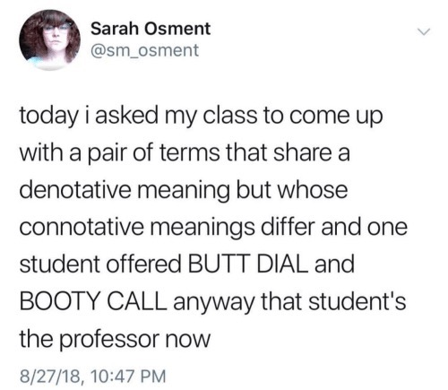
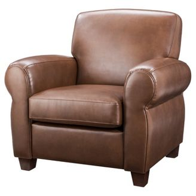
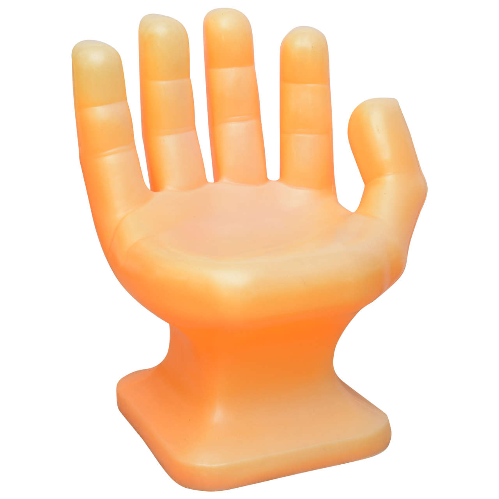
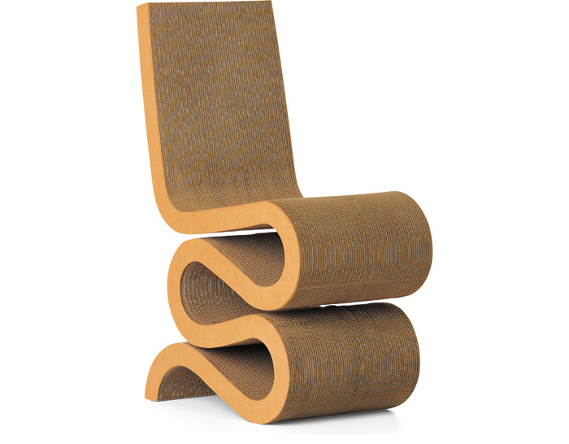

How are sounds made?
How do sounds pattern?
How are words made?
How do words pattern?
The study of meaning in Language
The study of meaning in conversational context
Today, we’ll focus on meaning in a greater sense
Next time, word meanings
After that, we’ll talk about Pragmatics
Truth in Sentences
Ambiguity
Entailment
Connotation and Denotation
Prototypes
Since words have meanings, and those meanings can be defined logically…
We can evaluate the logical truth of a sentence.
All linguists are linguists.
Every bachelor is unmarried.
A circle is circular.
The long cat is long.
All tautologies are true!
A circle is triangular.
French people are not French.
Will is tall and short.
All contradictions are false!
“Colorless green ideas sleep furiously”
Meaningless sentences lack meaning!
Commands: Turn in your homework!
Questions: Have you turned in your homework?
Greetings: Welcome to UC San Diego!
These can’t be evaluated as they’re not making claims
I sentence you to three weeks of probation.
I now pronounce you married.
More on these in Pragmatics!
There is a set of people who waved.
If Matt is in that set, this sentence is true.
If Matt is not, this sentence is false.
Syntactic structure, coupled with understanding of meaning of individual phrases, allows the determination of meaning via rules.
This is really cool stuff.

Syntactic/Structural Ambiguity
Lexical Ambiguity
Semantic Ambiguity


The same sequence of phonemes can have multiple meanings
The “sense” is the particular meaning in use at a moment.
“Spam”, “Lit”, “Broke”, “Turn”, “Lemon”
“He sold her a lemon”
“Stop sending me spam”
“Will cut up the center of the paper”
“Tryna strike a chord and it’s probably A-Minor”


“I know the structure, and I know the senses, but there are multiple readings”
Two people kissing two wives, or one wife kissing two people?
“John kissed Amy, and so did Alex” is not ambiguous
“John kissed his wife, and Alex kissed his own wife”
“Bob and Joe are married to each other”
“Bob and Joe are married, but Sean, Mike, and Adam are single”
“Every student hates at least one instructor that they’ve had, whoever that may be.”
“Every student hates one instructor, and his name is Matt Zaslansky”


Lexical Ambiguity
Syntactic Ambiguity
Semantic Ambiguity
Lexical Ambiguity
Syntactic Ambiguity
Semantic Ambiguity
Lexical Ambiguity
Syntactic Ambiguity
Lexical Ambiguity
Syntactic Ambiguity
Semantic Ambiguity
Lexical Ambiguity
Semantic Ambiguity
Lexical Ambiguity
Syntactic Ambiguity
Semantic Ambiguity
Lexical Ambiguity
Syntactic Ambiguity
Lexical Ambiguity
Syntactic Ambiguity
Semantic Ambiguity
Syntactic Ambiguity
Semantic Ambiguity
When the use of a word involves logical and necessary conclusions which can be drawn
“If X is true, then necessarily, Y is true”
You cannot imagine a situation in which X being true does not make Y true
Entails…
The red toy is broken
The blue toy is broken
Sam broke two toys.
Sam is capable of breaking toys.
Does not entail…
Sam intentionally broke the toys
Sam broke the red toy first.
Sam likes breaking toys.
They were Sam’s toys
Entails…
Mary kissed Blake
Blake was kissed by Mary.
Blake was kissed.
Mary touched Blake with her lips.
Does not entail…
Mary loves Blake.
Mary married Blake.
Blake kissed Mary.
Mary kissed Blake many times.
Mary did not kiss Blake.
“Mary passionately kissed Blake” entails “Mary kissed Blake”
“Mary kissed Blake” does not entail “Mary passionately kissed Blake”.
“John left the room” does not entail that the room is empty afterwards.
“Mary and John were in the room. John left the room”
“John was alone in the room. John left the room.”
Entailment is true only if you cannot imagine a situation where it could be false.
If it depends on context, it’s implicature.
Carlos was hit with a rubber chicken.
Roberta had a Rubber Chicken
Roberta dislikes Carlos
Roberta was within rubber-chicken-hitting distance of Carlos
Roberta hit Carlos
Carlos was hit with a rubber chicken.
Roberta had a Rubber Chicken
Roberta was within rubber-chicken-hitting distance of Carlos
Roberta hit Carlos
Demetrius was within line-of-sight of the kid
Demetrius saw a child.
Demetrius was on the street.
The kid was walking.
Demetrius was older than the kid.
Demetrius was within line-of-sight of the kid
Demetrius saw a child.
Demetrius was on the street.
Demetrius was older than the kid.

“Nathan is a District Attorney” entails that “Nathan is an Attorney”
“Nathan is a District Attorney” entails that “Nathan is a Lawyer”
“Nathan is an attorney” does not entail that “Nathan is a district attorney”
“Nathan is an attorney” does not entail that “Nathan is a lawyer”
All of these terms are system specific
“Sofa” and “Couch”
“Pop” and “Soda”
“Sick” and “Ill”
“Police Officer” and “Cop”
“All sofas are couches, and all couches are sofas”
“John purchased a car, therefore he bought a car”
“All sick people are ill, and all ill people are sick”
“All police officers are cops, and all cops are police officers”
“Cheap” and “Inexpensive”
“Strong-willed”, “Stubborn”, and “Pig-Headed”
“Study” and “Scrutinize”
“curious” and “nosy”
“vintage” and “outdated” and “antique”
“Cheap” and “inexpensive” both mean “costs little money”
A person can be “strong-willed”, “stubborn” or “pig-headed”
“She studied the paper” does not mean the same thing as “She scrutinized the paper”
Nobody sells outdated clothing, they sell vintage clothing
The ‘Denotation’ is the strict dictionary definition of a word
The ‘Connotation’ describes the non-definitional, emotional and associative facts about how the word is often used.
These are often value judgements, or links to related concepts
These are facts about usage, more than facts about definition
‘Cheap’ implies “Not great”, inexpensive doesn’t.
Denotation: Takes effort to ensure that their perspective and desires are shared and acted upon
Pushy Connotation?
Assertive Connotation?
Domineering Connotation?
New, Novel, Contemporary, Up-To-Date, State-of-the-Art, Recent
Offended, insulted, outraged, butthurt, upset
Father, Dad, Papa, Daddy
“inner city” has a specific racial connotation in general use
“Lib” has a specific political connotation in general use
An indirect and “pretty” way to refer to something unpleasant or embarrassing or with a negative connotation
“We neutralized three combatants” rather than “We killed three enemy fighters”
“We expect another round of downsizing” rather than “You all are gonna get fired”.
“Could you point me to the powder room?” rather than “I have to defecate immediately.”
“The children were placed in a tender-age shelter” rather than “We stuck the children in a detention camp”.
The same word may have different connotations among different groups
What’s offensive to one group of people might be the neutral term to another
‘We prefer the term…’
People may not be aware of the connotations of words they’re using
… and most importantly…
Imbecile, Idiot, Slow, Retarded, Mentally Handicapped, Developmentally Disabled
This phenomenon (euphemisms turning into negative terms then being replaced) is called the “Euphemism Treadmill”
“Oh, I always wondered what the internet was like in the late 1900s”
“The world of cell phones was very different at the turn of the century”
“Instructors used overhead projectors as late as last century”

“Butt dial” and “Booty call” may be two different compounds.
Booty text? Butt Text?
Or are they Adjective+Noun pairs?
Does “thin” mean the same thing as “gaunt”?
When does “idiot” stop meaning “intellectually disabled person” and start meaning “stupid person”?
It’s hard to figure out which of many word options carries the best choice of meaning
Where words start with one meaning and develop a new one
This can cause a new word sense, or just an overall change in meaning
Think ‘influencer’ or ’ mid’
… But even single words are a bit hard to define
“Bird”
“Chair”






| ### On a scale from A (Most) to E (Least), how chair-like is this… |
 |

A series of pizza boxes duct-taped together to a sittable height

An example of a given word or meaning which is “central” to the category, a “better example” of the idea.
The Pope is pretty far from the prototype for “Bachelor”
An emu is pretty far from the prototype for “Bird”
A stack of pizza boxes is pretty far from the prototype for “Chair”

(Credit to Emily Atkinson, University of Michigan)
Meaning is complicated
We can determine meaning using fancy semantic footwork
We can tell when meaning is unclear or ambiguous
We can tell when one sentence entails another
There’s more to a word than the dictionary definition
… and even definitions can feel pretty gradient
We’ll focus on individual word meanings
And we’ll start talking about meaning in context
Bring meaning